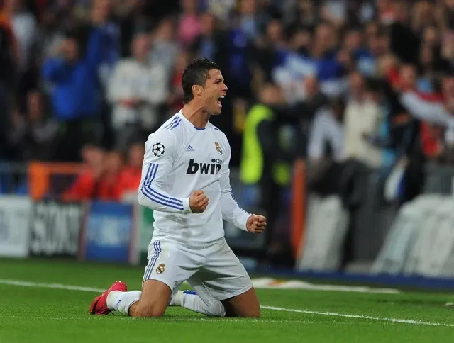

Antoine ROHO

Cristiano Ronaldo est l’un des joueurs les plus célèbres de l’histoire du football. Reconnu pour sa puissance physique, sa vitesse et son incroyable sens du but, il a remporté de nombreux trophées dans plusieurs championnats européens. Véritable machine à marquer, il a marqué l’histoire avec Manchester United, le Real Madrid et la Juventus.
Visitez le site Wikipédia